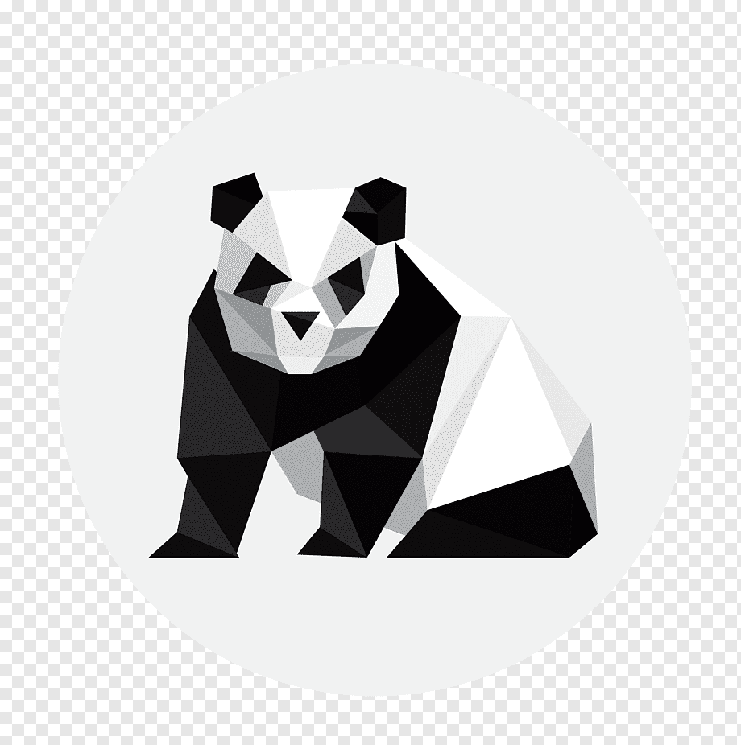
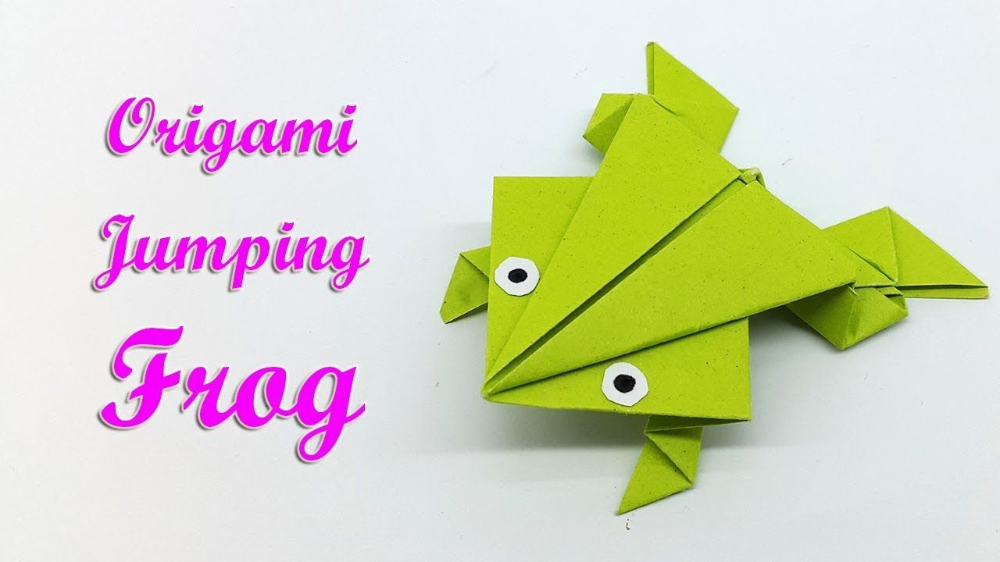

Origami Instructions And Diagrams
Step by step diagram are probably the most popular and eaisest to follow the way to show how to fold the things out of paper.Trying to find good origami instructions on the Internet can be a lot of work though. To help your search we have put together the largest database of free origami diagrams anywhere on the Internet....

- Camels have three set of eyelids and two rows of eyelashes to keep sand out of their eyes.
- Camels have thick lips which let them forage for thory plants that other animals can't eat.
- Camels can completely shut their nostrills during sandstroms.

- Chameleons are reptiles that are part of the iguana suborder.
- Changing skin colours is an important part of communication among Chameleons.
- Most Chameleons have a prehensile tail that they use to wrap around tree branches..

- Pigeons are incredibly comple and intelligent animals.
- Pigeons are reowned for their outstanding navigational abilities.
- Pigeons have excellent hearing abilities.

- Most have red-orange eyes.But ocassionally cicades have blue,white or graying eyes.
- They improve lawns by digging tunnels that allow air into soil, When they die, thier rotting bodies put nitrogen in the soil.
- There short adult lifes is not unsual for bugs.The adult stage for many insects is only for finding a mate or moving to a new location.

- The term bear-hug was first recorded in 1846.
- The teddy bears' picnic song was originally called The Teddy Bear two steps.
- The Oxford English Dictionary dates the first use of the term teddy bear to 1906.

- A gaint Panda is much bigger than your teddy bear.
- Gaint Pandas are good at climbing trees and can also swim.
- Pandas go for pink from white and black.

- Frogs don't need to drink water as they absorb it in their skin.
- Some frog calls can be heard upto a mile away.
- Some frogs can jumpe over 20 times their own body length that is like a human jumping 30m.

- Butterfly wings are transparent.
- Butterfly use their feet to taste.
- Butterfly only live for a few week.